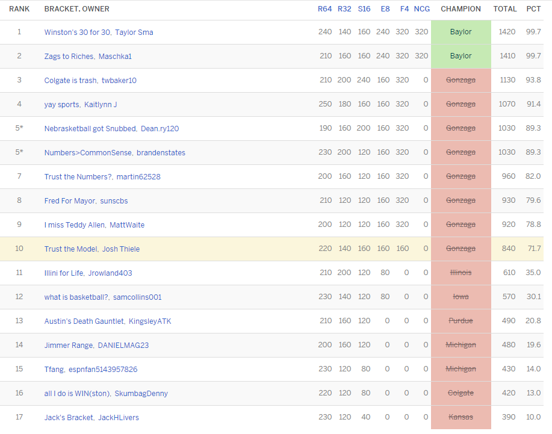
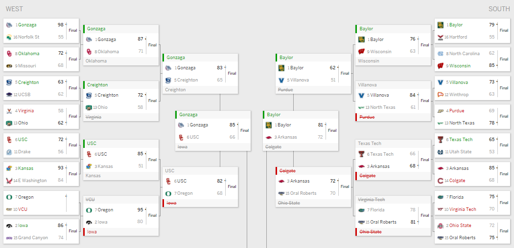
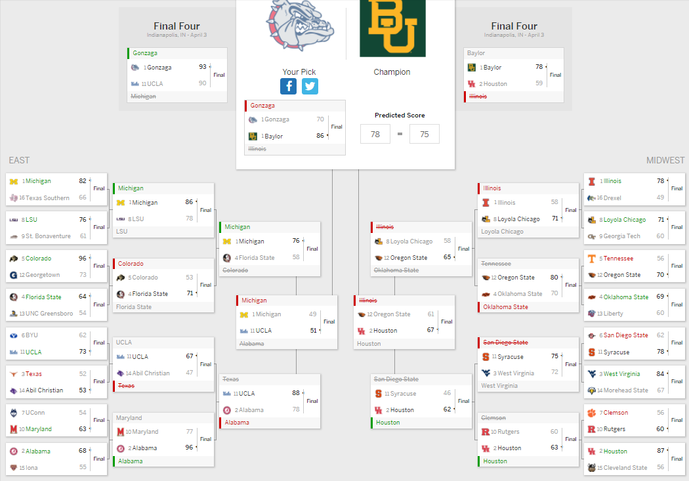

As March Madness came to a close this year, my model did … solid. The B1G disappointed and that definitely hurt, but looking at the class standings, I finished middle of the pack.

I was distinctively at the bottom of anyone who choose one of the two finalists, but I didn’t do super well outside of banking on Gonzaga. Now, compared to any other model I made, this one was my second best - I had one where I picked Baylor v. Gonzaga in the final. The model got about 72% of the games correct which is better than I would have done choosing solely on my own; truly, this model building gave me way more knowledge about this college basketball season than I had beforehand.


Some close games in the first round - the model expected to be about 50/50 - that I missed: Oregon vs. VCU (tough luck VCU) and Colorado vs. Florida State.
Some close games in the first round - according to the model - that I predicted: Oklahoma vs. Missouri, Kansas vs. USC, Creighton vs. UCSB, Maryland vs. UConn, and Villanova vs. Winthrop.
Honestly, the model did really well predicting those supposed 50/50 games. Unfortunately, it missed the marks on Colgate, Oral Roberts, Oregon State, San Diego State, and Loyola Chicago. There were bigger issues with my model than just missing the close games.
Retrospectively, it would’ve been nice to know the B1G was going to be stuck in Indianapolis that whole week before, and I’m personally using that as the reason why the conference performed so poorly. I can make all these complaints about things out of my control and changes that can not be reflected in the data; but I definitely think there is some work to do before next year’s contest. The possession metrics seemed like a great idea - they are great for predicting results after you have the data - but they are so difficult to predict with on their own. There was too big of dropoff between training and testing results, and therefore, I’m going to consider using variables that aggregate into those possession metrics next year (shooting statistics, turnovers, offense rebounds, etc.).
Additionally, I’m looking to maybe change the rolling window. If I’m going to look for more stabilized, long-term team performances, I might as well make it all of conference play or all of the season. If I’m going to look for a more short-term window, I might as well try to highly value teams that were playing well in the final few games of the season - Baylor I think is a good example. The final feature engineering change will be a better Win Quality measure - RPI has historically done well predicting the tournament. With more intraconference play next season, I feel my model should perform better, but there’s definitely room on my end to improve as well.
Overall, I feel this project was quite successful. This got me more excited about the tournament, built a better bracket, and taught me more about the college basketball teams this year. I think with a little human tinkering after running my model next year, I might win a tournament next year - as long as I don’t take the Huskers too far in it!